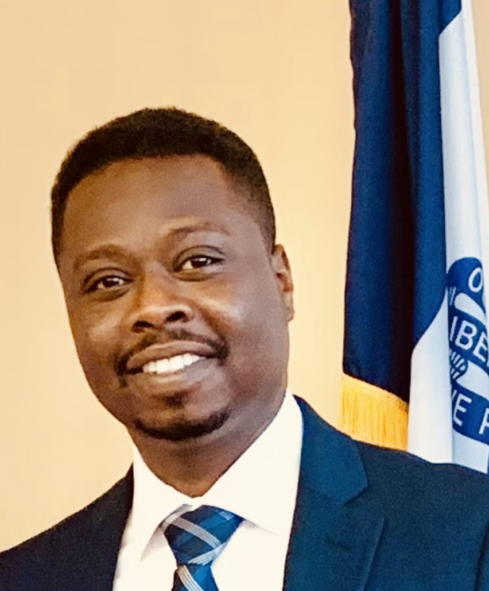

About Me
I'm Wasil Elsafi, a senior at the University of Iowa studying electrical engineering with applied physics
Focus.
I'll be doing an internship with Qorvo in Hiawatha, Iowa, throughout the summer 2023.
I'm Wasil Elsafi, a senior at the University of Iowa studying electrical engineering with applied physics
Focus.
I'll be doing an internship with Qorvo in Hiawatha, Iowa, throughout the summer 2023.
While I was a student at the University of Iowa, I also done some research.
I investigated the usage of magnetic transformers and voltage-variable capacitors in 2021 under Professor Anton Kruger supervision in order to create voltage-variable inductors.
I performed experiments in 2021 at the Quantum Light Control lab using wavefront shaping sets, SLM, DMD, and NIR.
In 2020, I worked with the Computational Biomedical Imaging Group (CBIG) on a research project including machine learning, MRI, and signal processing.
Below the poster are images of projects I've had here at the University of Iowa. I collaborated with a classmate to develop an
IR link to transmit audio over a 12 foot distance, and I also designed a DC-DC converter (Buck & Boost).
I was a part of the team that looked for and found fragments of the explosion of asteroid TC32008,
which was the first time ever asteroid (size of a truck) been seen in space and tracked all the way to impact.

In Sudan, there a many historical places to go visit, and here are some of them that I travelled to.